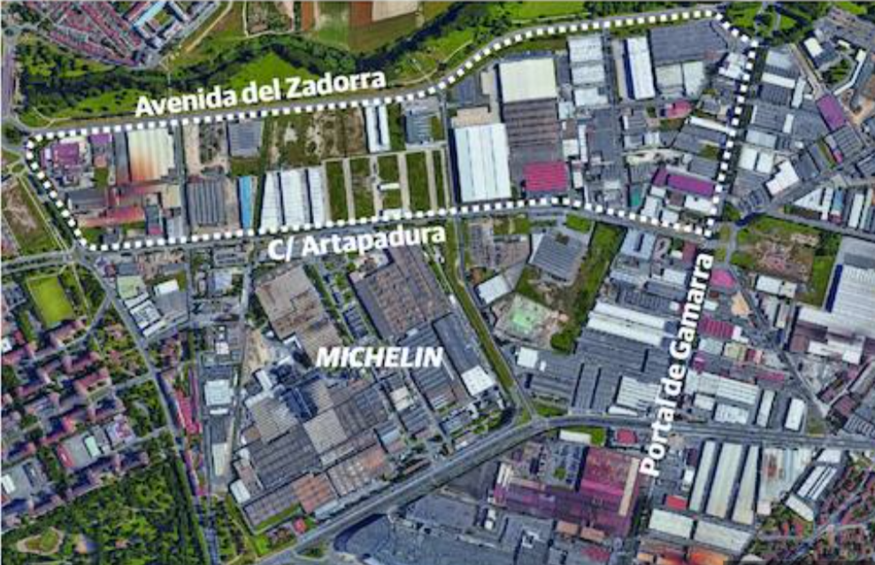

HISTORIA DE MICHELIN VITORIA
La fábrica de Michelin en Vitoria, España, abrió sus puertas en 1970, convirtiéndose en uno de los pilares de la industria del neumático en el país. Desde su inauguración, la planta ha sido una de las más importantes para la marca Michelin en Europa, siendo reconocida por su capacidad de innovación y producción.

Desde sus primeros días, Michelin Vitoria se destacó por su avanzada tecnología de producción. A lo largo de los años, la planta ha sido testigo de importantes cambios, adaptándose a nuevas demandas del mercado y manteniendo un alto nivel de innovación. Con el paso del tiempo, se ha convertido en un referente dentro de la industria del neumático, no solo en España, sino también en Europa.
La ubicación de la planta en Vitoria fue estratégica, ya que la región cuenta con una fuerte tradición industrial, lo que facilitó la integración de la fábrica en el ecosistema local. Además, la planta fue clave en el proceso de expansión internacional de Michelin, ayudando a la marca a consolidarse como líder mundial en la fabricación de neumáticos.
